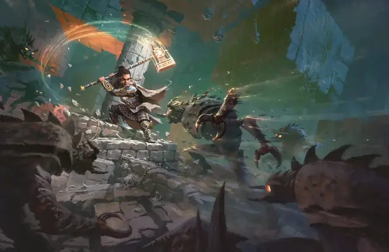

Божественная кара
Divine Smite
1 уровень, Воплощение

Время сотворения Бонусное действие, совершаемое вами немедленно после попадания по цели Рукопашным оружием или Безоружным ударом
Дистанция На себя
Компоненты В
Длительность Мгновенная
Классы Паладин
Цель получает от этой атаки 2к8 дополнительного урона Излучением или 3к8 дополнительного урона Излучением, если цель — Нежить или Исчадие.
Используя ячейку заклинания большего уровня. Урон увеличивается на 1к8 за каждый уровень ячейки выше 1-го.